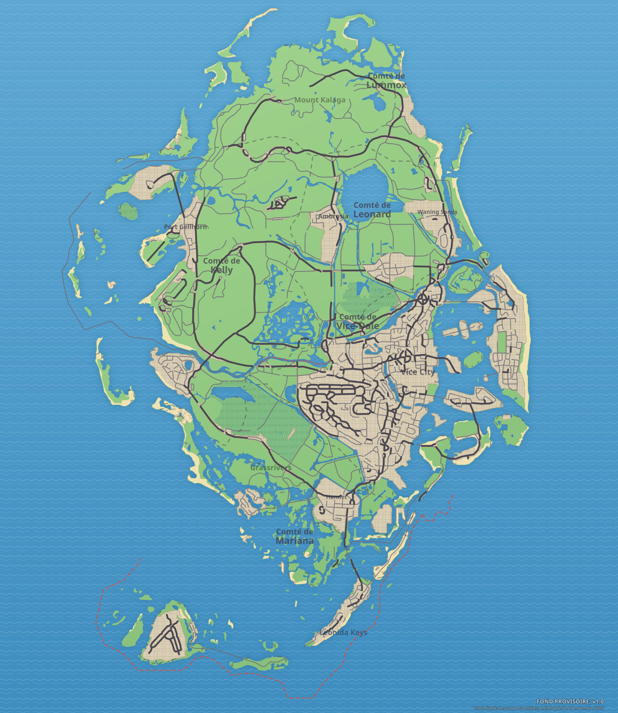

The essentials
Building with no known name, numbered L2359 on the site’s map, in the Crosstown neighborhood, the city of Vice City. Status: sighted in official media (visible or named in a trailer, a screenshot or an official image, with no description published by Rockstar). It appears in an official screenshot, visible on this page. Around it: Building L2358 (to the south), Building L1683 (to the west), Building L1684 (to the west).
Identity
| Name | Building L2359 (site number, name unknown) |
|---|---|
| Category | Identified building |
| District | Crosstown |
| City | Vice City |
| Status | Sighted in official media |
| Real-world place that seems to have inspired it | Not identified |
| Position on the map | x 3487, y 2909 (center the map) |
| Source | Official screenshots and trailers; spotted by gtadb.org and its contributors (CC BY 4.0) |
On the Leonida map

Building L2359Data: GTA VI Landmarks Data, gtadb.org and its contributors, CC BY 4.0, modified for Leonidakit. License: creativecommons.org/licenses/by/4.0
Closest places on the map
Report an error on this pageWhat’s confirmed and how we check itSources and credits
The calculator
How much playtime to settle around here?
A house, a shop, a garage: enter the price you have in mind, your money and what you earn per session, and the calculator tells you how long it takes.